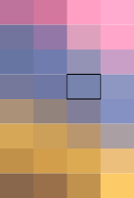

Современные бытовые видеокамеры SONY HANDYCAM HD AVCD HDR (например, CX-130), различные Full HD модели Panasonic и прочие комеры до сих пор имеют в своих форматах тяжелое наследие древних телевизионных стандартов. Одно из проявлений такого наследия - это запись видео в черезстрочном (interlace) режиме и использование форматов сохранения видео с неквадратным пикселем.
Для того, чтобы ориентироваться в этих форматах и правильно перекодировать видео, нужно знать как устроен кадр и какие характеристики он имеет.
Для примера можно взять видеофайл с камеры Sony Handycam CX-130, который снимался в "среднем" режиме плотности записи STD, в широкоэкранном режиме 16:9, с интерлейсом. Разрешение у таких файлов *.MTS. Внутри таких файлов могут находиться различные форматы видео. Поэтому важно научиться доставать и понимать информацию о формате записанного видеопотока.
Чтобы получать информацию о видеопотоке, можно воспользоваться программой ffmpeg. Вывод информации о формате - это опция -i. Вот что она может выдать:
$ ffmpeg -i 00123.MTS
Input #0, mpegts, from '00123.MTS':
Duration: 00:00:49.92, start: 1.040000, bitrate: 10492 kb/s
Program 1
Stream #0:0[0x1011]: Video: h264 (High) (HDMV / 0x564D4448), yuv420p(top first), 1440x1080 [SAR 4:3 DAR 16:9], 25 fps, 50 tbr, 90k tbn, 50 tbc
Stream #0:1[0x1100]: Audio: ac3 (AC-3 / 0x332D4341), 48000 Hz, stereo, fltp, 256 kb/s
Stream #0:2[0x1200]: Subtitle: hdmv_pgs_subtitle ([144][0][0][0] / 0x0090), 1920x1080
Для начала нужно понять, какой же итоговый размер видео хранится в таком файле. Здесь видно размер 1440x1080, но если посмотреть в таблицу стандартных размеров кадра, то такого размера найти не получится:
|
Поколение |
Тип |
Разреш., px |
Соотношение |
Формат |
Кадр фактич., px |
|
SD – Standard Definition |
SD |
720x576 |
4:3 |
576i |
720x288 |
|
576p |
720x576 | ||||
|
SD |
640x480 |
4:3 |
480i |
640x240 | |
|
480p |
640x480 | ||||
|
HD – High Definition |
HD |
1280x720 |
16:9 |
720p |
1280x720 |
|
Full HD |
1920x1080 |
16:9 |
1080i |
1920x540 | |
|
1080p |
1920x1080 | ||||
|
UHD – Ultra High Definition |
4K UHD |
3840x2160 |
16:9 |
2160p |
3840x2160 |
|
8K UHD |
7680x4320 |
16:9 |
4320p |
7680x4320 |
В чем же дело? Давайте посмотрим соотношение сторон, может оно наведет нас на мысль. 1440/1080=1.333. Это значение - то же самое что и 4/3=1.333. Получается, что кадр этого видео, как на старых телевизорах, имеет соотношение размеров 4:3. Так? Надо проверить.
Если мы запустим на просмотр данный видеофайл, то увидим, что соотношение сторон у него вовсе не 4:3. Даже невооруженным взглядом можно сразу увидеть, что видео "широкоэкранное", и имеет соотношение 16:9=1.777. Какой из этого следует вывод? Как минимум такой, что изображение, на самом деле, имеет размер в экранных пикселях вовсе не 1440x1080! А какой же размер на самом деле?
И вот тут надо понять одну вещь. Видеокадр кодируется в видеофайле не в экранных пикселях, а в своих собственных, "виртуальных" пикселях. А видеопроигрыватель преобразует эти виртуальные пиксели в экранные. Даже если в видеопроигрывателе поставить размер видео в 100%, то не факт, что каждый пиксель видео будет соответствовать каждому экранному пикселю. Почему? Потому что экранные пиксели на мониторе - квадратные, а "виртуальные" пиксели внутри видеофайла - могут быть (и часто бывают) совсем не квадратные, а прямоугольные!
* * *
В видеокодировании есть такое понятие - PAR, расшифровывающееся как Pixel Aspect Ratio. Понятно, что если PAR равен 1:1, то пиксель квадратный.
Кроме того, есть еще два понятия: SAR и DAR. Что это такое? SAR - это Storage Aspect Ratio, то есть соотношение сторон кадра, записанного в текущем файле. (Следует обратить внимание, что PAR - это про пиксель, а SAR и DAR - это про кадр). И высчитывается SAR просто путем деления ширины кадра, в своих "виртуальных" пикселях, к высоте кадра, тоже в своих "виртуальных" пикселях. Размер кадра 1440x1080? Значит SAR=4:3. Все. (Тут, наверно, даже нехорошо называть пиксели кадра, записанного в видеофайл, "виртуальными". Для самого файла они вполне себе настоящие. Но я их так называю потому, что эти пиксели могут быть не квадратными, и потому к привычному нам квадратному пикселю отнести их нельзя. И эти пиксели, будучи выведенными на квадратную сетку, отобразят записанную в них реальность с некоторым растяжением/сжатием, а не один в один).
DAR - это Display Aspect Ratio, то есть соотношение сторон кадра, которое должно использоваться при выводе на экран. Если SAR и DAR не совпадают (и это нормальная ситуация), то видеоплеер должен сделать следующее: взять изображение в "виртуальных" пикселях, и при выводе их на экран растянуть картинку так, чтобы получилось соотношение сторон, заданное в DAR.
И теперь самое главное. Параметры PAR, SAR и DAR всегда связаны между собой простой формулой:
PAR = DAR / SAR
или, что то же самое:
DAR = SAR × PAR
или, что то же самое:
SAR = DAR / PAR
Теперь становится понятно, что значат различные параметры, записанные в нашем тестовом файле:
1440x1080 [SAR 4:3 DAR 16:9]
Здесь видно, что размер кадра в "виртуальных" пикселях 1440x1080, а значит SAR = 1440 / 1080 = 1.333 = 4/3. DAR задан равным 16:9=1.777. Значит, по формуле, PAR = 1.777 / 1.333 = 1.333. Да, тут нету ошибки. При таких числах PAR действительно 1.333 (и он равен SAR). О чем говорит PAR=1.333? О том, что пиксель, записанный в видеофайл, имеет соотношение сторон 4:3, и описывает цвет картинки настоящего мира вот так:

А в самом видеофайле пиксель - это просто одна ячейка с хранимым цветом. Поэтому при выводе картинки на экран, кадр нужно растягивать.
Это можно проиллюстрировать в картинках. У всех современных LCD мониторов сетка пикселей квадратная. Если вывести необработанный "виртуальный" кадр с заснятым ровным кругом из вышеуказанного тестового видеофайла, то он будет выглядеть вот так:
А видеопроигрыватель, на основе значений SAR и DAR выведет такую картинку:
При перекодировании с целью изменения размера кадра в стандартные форматы, например в 720p или 1080p, которые имеют квадратные пиксели, нужно учитывать, что пиксели исходного файла не квадратные. Как же правильно перекодировать?
* * *
Вообще, при перекодировании существует две возможности - перекодировать размер с сохранением SAR и DAR, то есть картинка внутри кадра как была слющенная, так и останется. Либо перекодировать с приведением размера кадра к конечному размеру изображения. Считается, что первый вариант меньше повреждает картинку чем второй.
Вот как пользоваться фильтром изменения размера кадра по первому варианту. Для высоты можно задать требуемую величину, а для ширины задать -1. Значение -1 заставит FFMpeg расчитать пропорциональную итоговую ширину с сохранением SAR. Пример:
ffmpeg -i input.MTS -vf yadif -vf scale=-1:720:flags=bicubic -r 25 -vsync 1 -y -codec:v mjpeg -q:v 1 -g 0 -codec:a adpcm_ima_wav output.avi
Этот пример перекодирует видео из размера 1440x1080 в размер 960x720. SAR и DAR останутся те же. И информация в полученном файле будет такой:
Input #0, avi, from '00123.MTS.avi':
Metadata:
encoder : Lavf57.56.100
Duration: 00:01:42.44, start: 0.000000, bitrate: 22296 kb/s
Stream #0:0: Video: mjpeg (MJPG / 0x47504A4D), yuvj420p(pc, bt470bg/unknown/unknown), 960x720 [SAR 4:3 DAR 16:9], 21903 kb/s, 25 fps, 25 tbr, 25 tbn, 25 tbc
Stream #0:1: Audio: adpcm_ima_wav ([17][0][0][0] / 0x0011), 48000 Hz, stereo, s16p, 384 kb/s
В принципе, все программы видеоредактирования и видеопроигрыватели нормально поймут такой формат, и будут выдавать на экран картинку размером 1280x720 pix (что является форматом 720p).
Но нам привычнее всего работать с квадратными пикселями. Поэтому можно поступить по второму варианту:
ffmpeg -threads 2 -i input.MTS -vf yadif -vf scale=1280:720:flags=bicubic,setsar=1:1 -r 25 -vsync 1 -y -codec:v mjpeg -q:v 1 -g 0 -codec:a adpcm_ima_wav output.avi
Эта команда абсолютно аналогична первой, за исключением добавленной опции ",setsar=1:1" и точным указанием размера кадра. После такого конвертирования информация о новом видеофайле будет следующая:
Input #0, avi, from '00123.MTS.avi':
Metadata:
encoder : Lavf57.56.100
Duration: 00:00:49.92, start: 0.000000, bitrate: 23812 kb/s
Stream #0:0: Video: mjpeg (MJPG / 0x47504A4D), yuvj420p(pc, bt470bg/unknown/unknown), 1280x720 [SAR 1:1 DAR 16:9], 23428 kb/s, 25 fps, 25 tbr, 25 tbn, 25 tbc
Stream #0:1: Audio: adpcm_ima_wav ([17][0][0][0] / 0x0011), 48000 Hz, stereo, s16p, 384 kb/s
Вот теперь получился файл, который закодирован точка-в-точку под обычный квадратный пиксель.
Каким вариантом пользоваться? Я считаю, что современные разрешения достаточно высоки, чтобы не волноваться о потери качества при перекодировании по второму варианту. В конце концов, такие преобразования размеров сопряжены еще и с преобразованием с интерлейса на деинтерлейс. Тут уже исходная картинка сильно изменяется. Гораздо удобнее работать с квадратным пикселем. Поэтому я однозначно выбираю второй вариант.
* * *
Далее хотел еще написать про FPS, но в принципе, современный ffmpeg корректно преобразует черезстрочное видео с частотой 50fps на полукадр в прогрессивное видео с частотой 25fps. Достаточно задать опцию "-r 25". Поэтому никаких подробностей о fps, tbr и tbc в этой статье не будет. Я приведу только выдержку из документации и попытку перевода неким arch!ver с forum.ubuntu.ru:
Перевод: